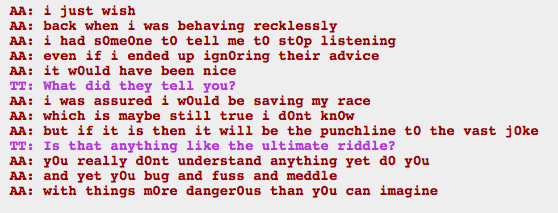

God Aradia, you complain about Rose not knowing anything and then refuse to tell her. Like okay so far it seems like things are predetermined, but if I wanted to undermine fate, I would be spreading as much information and humanly (trollily?) possible. Wouldn’t that be the best way to convince Rose not to do whatever Rose was going to do?